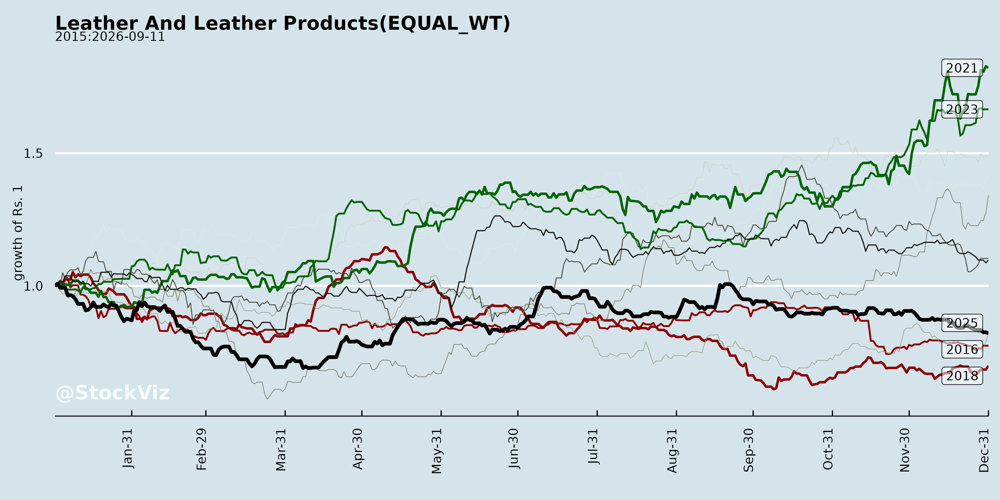
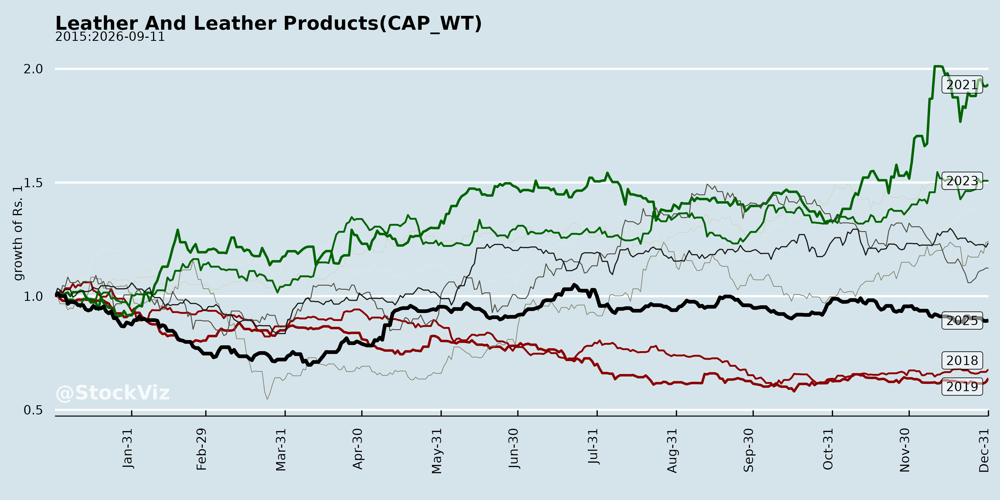
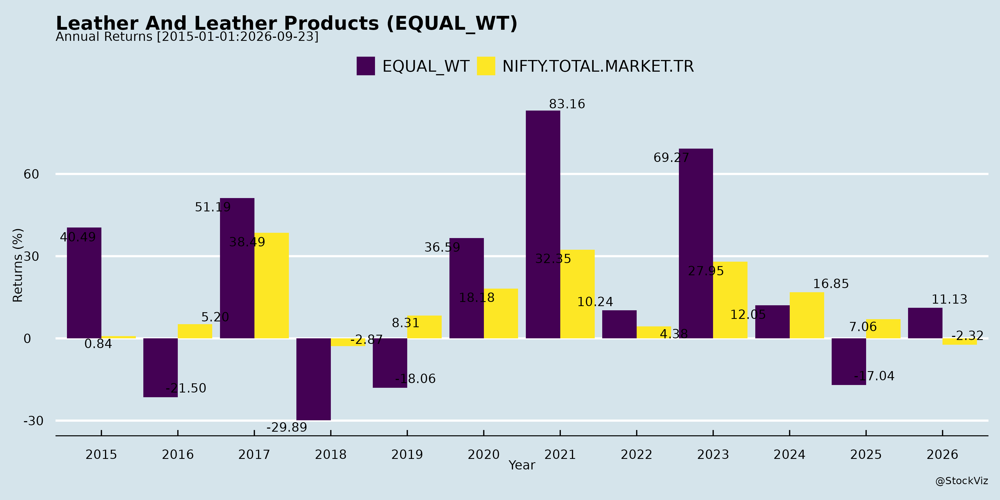
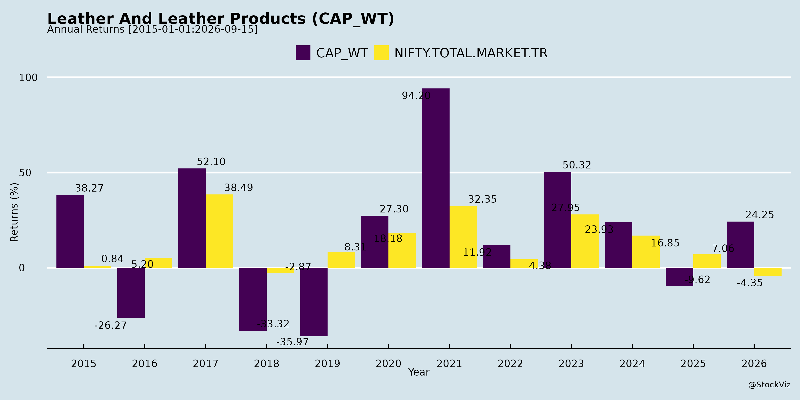
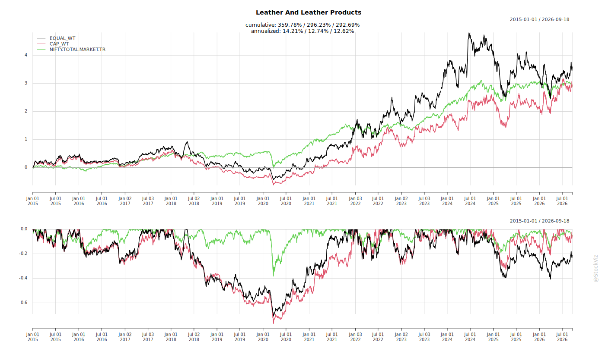
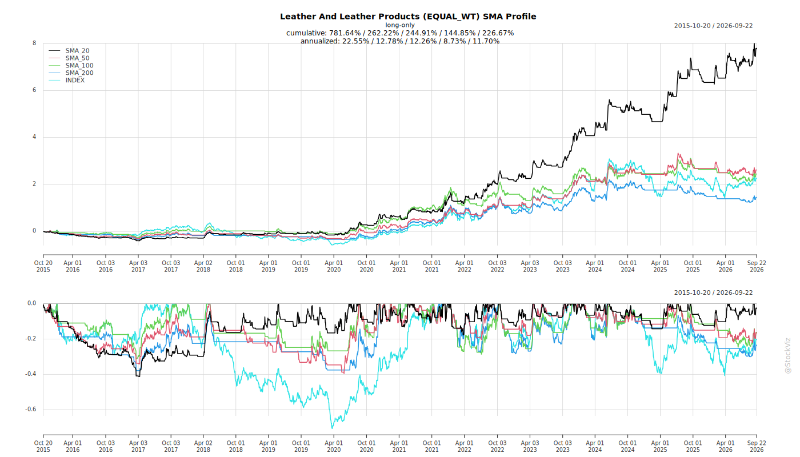
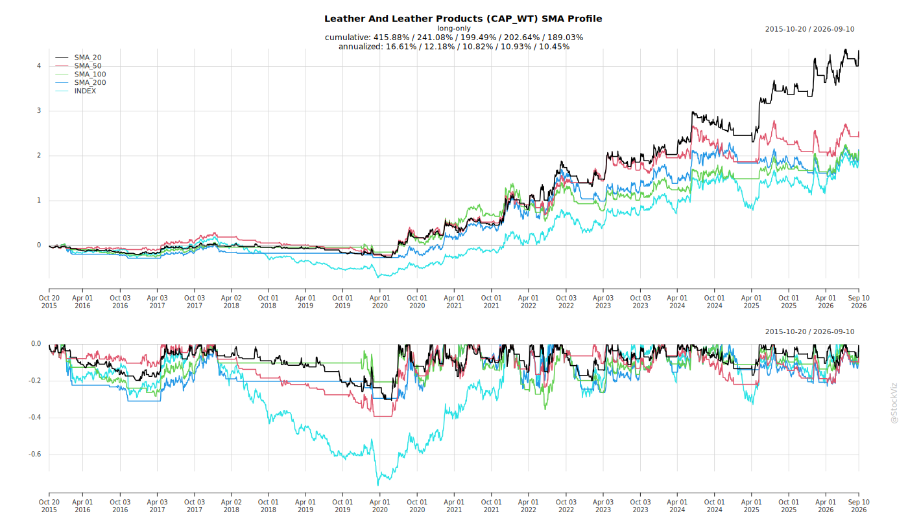
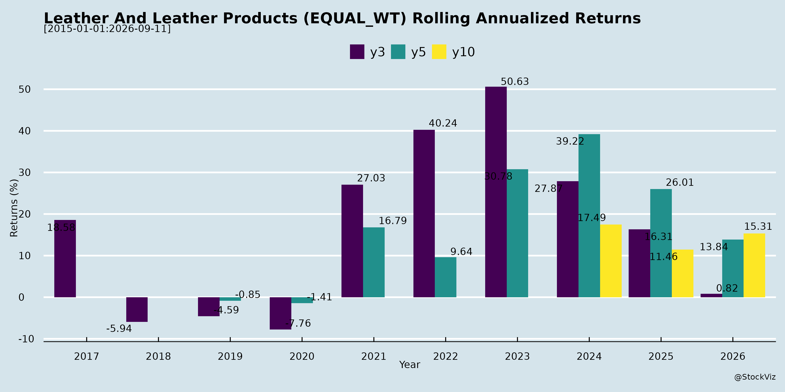
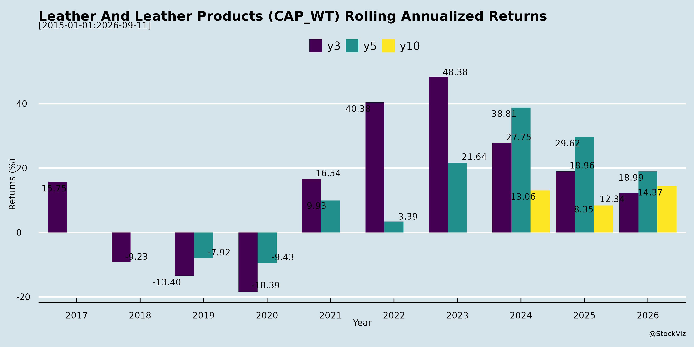

Annual Returns




Cumulative Returns and Drawdowns

SMA Scenarios


Current Distance from SMA
Rolling Returns


EBIT (% of Industry Total)
Revenue (% of Industry Total)
AI Summaries
Analyst
asof: 2025-11-27
Analysis of Indian Leather and Leather Products Sector (Focus on Synthetic Leather via Mayur Uniquoters Insights)
Mayur Uniquoters Limited (MUL), a leading organized player in synthetic leather (PVC/PU-based for automotive, footwear, furnishing, etc.), provides key insights into the sector. Q2 FY26 results show robust standalone growth (15% QoQ revenue), driven by exports (42% share, up from 38-40%), amid broader sector dynamics like export demand, raw material corrections, and import competition. Below is a structured summary:
Tailwinds
- Export Momentum: Strong US/Europe automotive OEM demand (e.g., Stellantis, Ford, Daimler via Mexico warehouses). Export sales at ₹100 Cr (OEM ₹71 Cr), up 25% QoQ value/15% volume; share rising to 42%. Expected 15%+ growth vs. domestic 8-10%.
- Raw Material Relief: PVC prices correcting, boosting gross margins (up 2% YoY/4-5% QoQ standalone; consol impacted by provisions but trending up).
- Policy Support: Potential FTAs (e.g., US tariff cut from 50% to 25%) to boost general exports (marine/others). Anti-dumping duties on Chinese PU curbing under-invoicing.
- Domestic Stability: Auto OEM/replacement (₹85 Cr), footwear (₹43 Cr) steady; furnishing growing via dealer expansion.
Headwinds
- Inventory/Transit Delays: Standalone PAT (₹48 Cr) > consol (₹40 Cr) due to US warehouse stock (material dispatched from India reflects in standalone; sales realization lags in consol). ₹11 Cr provisions for old inventory in Q2.
- PU Segment Weakness: Utilization at 23-25%; ₹7.8 Cr sales (up 32% QoQ value) but losses (depreciation-driven, no cash loss). Chinese competition persists despite duties.
- Margin Pressure: Consol gross margins down 238 bps YoY (provisions); EBITDA flat H1 despite standalone gains.
- Capacity Constraints: Utilization at 75-77%; new South India line (4-5L meters/month) delayed by Mexico uncertainty.
Growth Prospects
- Revenue/EBITDA Guidance: 12-15% revenue/15-20% profit growth FY26; exports to hit ₹350-400 Cr (from ~₹300 Cr FY25). H2 acceleration expected as inventory normalizes.
- Volume Expansion: Q2 at 8M meters; PU ramp-up via pilots/talks (H&M, Adidas, Zara); new models with Ford/Stellantis.
- Capex Plans: South India plant (1 line); Mexico on hold but strategic for US. Surplus cash (₹450 Cr) earmarked for expansion.
- Sector-Wide: Automotive (exports/domestic), footwear/furnishing demand; sustainability (MUL’s CSR: 45K plants) aligns with global OEM preferences.
Key Risks
- Accounting/Volatility: Ongoing standalone-consol gaps from transit/provisions; could mislead quarterly trends.
- Geopolitical/Execution: US tariff/policy uncertainty delaying Mexico capex; reliance on Mexico route for tariff avoidance.
- Segment-Specific: PU ramp-up delays (competition from Benecke-Kaliko/China); low furnishing penetration despite potential.
- Demand/Macro: Auto sector cyclicality (US/Europe); PVC price volatility; succession concerns (leadership health hinted).
- Competition: European suppliers in premium OEMs (Benz/BMW); unorganized players in domestic replacement.
Overall Summary: Sector enjoys tailwinds from exports (esp. auto) and cost relief, positioning MUL for guided growth. However, PU struggles and inventory issues pose near-term headwinds, with execution risks on capex/PU key to sustaining 15-20% profitability. Outlook positive for FY26/H1 FY27 if exports sustain and FTAs materialize.
General
asof: 2025-11-27
Summary Analysis: Indian Leather & Leather Products Sector (Based on Provided Documents)
The documents cover Q1/Q2 FY26 financials and announcements from key listed players: AKI India Ltd (natural leather), Mayur Uniquoters Ltd (synthetic PU/PVC leather), Bhartiya International Ltd (apparel/leather), Mirza International Ltd (leather footwear), and Zenith Exports Ltd (leather exports). The sector shows mixed performance: robust growth in synthetics (Mayur), but weakness in natural leather (AKI). Overall, FY26 H1 indicates resilience amid global demand recovery, but with volatility.
Tailwinds (Positive Factors)
- Strong Synthetic Leather Momentum: Mayur Uniquoters (single-segment PU/PVC) reported explosive H1 FY26 growth—standalone revenue ₹45,417 Cr (+~10% YoY), PBT ₹11,995 Cr (+19%), net profit ₹8,933 Cr. Consolidated similar (revenue ₹45,619 Cr). High cash flows (₹6,013 Cr operating), low debt, and rising inventories signal capacity expansion/export push.
- Capital Infusion & Expansion: AKI raised ₹20.6 Cr via preferential warrants (Jun 2025) for working capital/general purposes—no deviations. Supports scaling in leather goods.
- Talent Strengthening: Strategic hires—Bhartiya’s Business Head-Outerwear (30+ yrs exp. with PVH, M&S); Mayur categorized 3 AGMs as SMPs (export/marketing focus). Enhances export competitiveness.
- Employee Incentives: Mirza’s ESOS 2025 (25L options @ ₹10 exercise) to retain/motivate talent amid growth.
- Operational Efficiency: Mayur’s EBITDA margins ~50%+ (inferred from PBT/revenue); AKI’s inventory drawdown (-₹1,183 Cr standalone) aided Q1 profits despite sales dip.
Headwinds (Challenges)
- Demand Slump in Natural Leather: AKI standalone Q1 sales down 39% YoY (₹1,136 Cr vs. ₹1,871 Cr), profit -42% (₹21L vs. ₹36L). Consolidated sales -15%. High material costs (₹1,740 Cr vs. sales) squeezed margins.
- Volatility in Key Metrics: AKI’s large inventory reductions inflated profits (unnatural YoY comp). Mayur saw inventory buildup (+₹166-491 Cr), signaling potential overstock risk.
- Cost Pressures: Across firms—rising employee costs (AKI +20% QoQ), finance/depreciation steady but elevated. Power/fuel up in AKI.
- Physical Shareholding Issues: Zenith’s AGM notice highlights KYC/ demat mandates (SEBI circular), risking dividend delays for physical holders.
Growth Prospects
- High (20-30% CAGR Potential): Synthetics lead (Mayur: H1 revenue >FY25 annual pace; subsidiaries in USA/Europe/SA contribute ₹7-13 Cr revenue). Exports strong (Mayur OEM/general; Bhartiya’s global clients). Sector tailwinds: rising global apparel/automotive demand (leather in outerwear/shoes).
- Expansion Catalysts: AKI’s fund use for WC; Mayur’s capex (₹1,551 Cr H1); Mirza ESOP for retention. Single-segment focus (Ind AS 108 not applicable) aids efficiency.
- Outlook: H1 FY26 profitability up (Mayur +19% PBT); full FY26 could see 15-25% sector revenue growth if exports rebound (e.g., Mayur’s forex gains).
| Mayur (Standalone) |
Revenue ₹45,417 Cr |
+10% |
| AKI (Standalone Q1) |
Revenue ₹1,136 Cr |
-39% |
Key Risks
- Demand/Cyclicality (High): Weak Q1 for AKI signals export softness (leather goods sensitive to US/EU fashion cycles). Mayur resilient but OEM-dependent.
- Cost/Inventory Volatility (Medium-High): Material costs 50-100% of sales; inventory swings (AKI -₹1,389 Cr consolidated) distort profits.
- Forex & Global Exposure (Medium): Mayur’s subsidiaries unreviewed (20% assets); AKI’s other income volatile (₹129-325 Cr).
- Regulatory/Compliance (Low-Medium): ESOP/SEBI filings clean, but Zenith’s physical folio risks (PAN/KYC mandatory for payouts post-Apr 2024).
- Competition (Medium): Synthetics (Mayur) eroding natural leather (AKI); no segment reporting limits diversification view.
- Execution: Unreviewed sub-results (AKI UK/LLP; Mayur subs) could hide issues; exceptional items (AKI -₹83 Cr prior qtr).
Overall Sector Rating: Positive Bias (Buy/Hold). Synthetics outperform (Mayur as bellwether); natural leather recovery needed. Monitor Q3 exports/global PMI. EPS strong (Mayur ₹20.86 basic H1). Risks mitigated by low debt/cash-rich BS (Mayur equity ₹101 Cr, assets ₹113 Cr).
Data in ₹ Lakhs unless stated; FY26=Apr-Sep 2025.
Investor
asof: 2025-11-27
Analysis of Indian Leather and Leather Products Sector
Using the Q2 FY26 Earnings Conference Call transcript of Mayur Uniquoters Limited (a leading organized player in synthetic leather, key input for automotive, footwear, furnishing, and replacement markets) as primary input, the analysis focuses on the broader Indian Leather and Leather Products sector. Synthetic leather (PVC/PU-based) constitutes a significant ~40-50% share of India’s leather products market (per industry estimates), driven by cost advantages, vegan trends, and auto OEM demand. The sector’s FY26 outlook reflects auto recovery, exports, and capacity expansions amid raw material volatility.
Tailwinds
- Robust Export Momentum: US/Europe auto OEM demand (e.g., Stellantis, Ford, Daimler) drives growth; exports at ~42% of sales (INR 100 Cr in Q2, up 15% QoQ volume). Routing via Mexico warehouses avoids 50% US tariffs. Sector-wide, FTAs (e.g., with US/EU/ASEAN) could cut tariffs to 25%, boosting marine/auto exports.
- Domestic Auto & Diversification: Auto OEM (INR 49 Cr domestic + INR 71 Cr export) and replacement (INR 36 Cr) stable; footwear (INR 43 Cr) and furnishing (INR 8 Cr) growing via dealer expansion. Capacity utilization at 75-77% supports 12-15% revenue growth guidance.
- Raw Material Tailwinds: PVC prices correcting, lifting gross margins (up 2% YoY standalone, 4-5% QoQ). Anti-dumping duties on Chinese PU curb under-invoicing, aiding local players.
- Sustainability & CSR Edge: Plantations (45k+ trees), education/sanitation initiatives enhance ESG appeal for global OEMs.
Headwinds
- Inventory & Consolidation Gaps: Standalone PAT (INR 48 Cr, +17% QoQ) outpaces consol (INR 41 Cr) due to ~INR 11 Cr provisions on old US warehouse inventory and transit delays (3-4 month lead times). Continuous mismatch pressures consol EBITDA (flat H1).
- PU Segment Ramp-Up Delays: PU sales at INR 7.8 Cr (23-25% utilization, +48% value QoQ but depreciation losses); Chinese competition persists despite duties (quantity manipulation). Social audits block PVC-PU co-location for some brands.
- Margin Pressures: Gross margins contracted 238 bps YoY consol (provisions offset PVC relief); EBITDA flat H1 despite guidance.
- Geopolitical/Supply Chain: US tariff uncertainty (50%) and Mexico border reliance; no direct impact yet but risks escalation.
Growth Prospects
- Export-Led Expansion (15%+ YoY): New US models/Ford tie-ups; H1 export volume +12.5% YoY, Q2 +14%. Full-year exports eyed at INR 350-400 Cr (from ~INR 300 Cr FY25). US/EU OEM preference for Indian suppliers positions sector for 2-3 year momentum.
- Capacity Additions: South India greenfield (1 line, +4-6 Mn meters/year) to support demand; Mexico on hold but strategic for localization. Total volume Q2: 8 Mn meters.
- Product Diversification: PU scaling (21% volume QoQ); furnishing/retail push. FY26 guidance: 12-15% revenue, 15-20% profit growth (H2 acceleration via inventory normalization).
- Sector Outlook: Auto recovery (domestic + exports), vegan leather shift, FTAs could drive 10-12% sector CAGR to FY28 (volumes >1 Bn sqm).
Key Risks
- Utilization & Ramp Risks: New South India/Mexico plants face PU-like delays (low utilization, capex drag); ~INR 450 Cr net cash buffers but misallocation possible.
- Raw Material/Competition: PVC volatility, Chinese dumping (despite duties), European rivals (e.g., Benecke-Kaliko for Mercedes/BMW US ops).
- Macro/Regulatory: US tariffs/FTAs delays, auto slowdown, succession (implied Chairman health concerns).
- Accounting/Visibility: Persistent standalone-consol gaps erode investor confidence; H2 needs 20%+ profit surge to meet guidance.
- Execution: OEM approvals (H&M/Adidas/Zara pilots ongoing but no firm deals); social audits limit flexibility.
Summary
The Indian Leather Products sector (synthetic-heavy) enjoys strong tailwinds from US auto exports (42% mix, 15%+ growth) and PVC relief, with Mayur’s 15% QoQ standalone growth exemplifying organized players’ edge. Growth prospects are robust (12-15% FY26 revenue), fueled by capacity expansions and FTAs, targeting H2 profitability surge. However, headwinds like inventory gaps (INR 11 Cr provisions), PU underperformance (25% utilization), and tariffs pose near-term drags, keeping consol flat. Key risks center on execution (ramping new plants/deals) and geopolitics, but INR 450 Cr cash provides resilience. Overall Outlook: Positive (Buy/Hold for exports) – sector poised for 10%+ CAGR if H2 delivers; monitor US inventory normalization and PU traction. Comparable peers (e.g., other synth-leather exporters) likely mirror this trajectory.
Press Release
asof: 2025-11-27
Analysis of Indian Leather and Leather Products Industry
Using the provided Mirza International Limited (a key player in leather footwear with brands like Red Tape and Off The Hook) disclosure as a primary input, alongside broader industry context (e.g., export data, government schemes, and sector challenges), here’s a structured analysis. Mirza’s Income Tax search (downplayed as routine with no operational impact) highlights regulatory risks but underscores resilience. India’s leather industry (~$17-20B exports in FY24, 13% global share) is export-driven (80% revenue), with footwear dominating (60% share).
Headwinds (Challenges)
- Regulatory and Tax Scrutiny: Mirza’s recent Income Tax raid (Sep 2025) signals heightened probes into tax compliance, common in labor-intensive sectors with complex supply chains. Industry-wide, GST audits, anti-profiteering cases, and evasion charges disrupt cash flows (e.g., similar raids on other exporters).
- Environmental Compliance Costs: Strict Zero Liquid Discharge (ZLD) norms and effluent treatment mandates raise capex by 20-30%; non-compliance leads to shutdowns (e.g., Tamil Nadu/Kanpur clusters).
- Raw Material Volatility and Supply Constraints: Hide prices fluctuate 15-20% YoY due to monsoon impacts on livestock; 70% hides exported as wet-blue, limiting domestic supply.
- Global Competition and Trade Barriers: Vietnam/China dominate via FTAs (e.g., CPTPP); EU’s sustainability regs (e.g., EUDR) impose traceability costs.
Tailwinds (Positive Factors)
- Government Support: Schemes like PLI (₹1,500Cr for footwear/leather), IFLDP, and 100% FDI boost capacity (e.g., 300+ mega parks planned). Duty drawbacks and RoDTEP aid exports.
- Export Demand Recovery: US/EU shifts from China (post-trade wars) favor India; FY25 exports up 10-12% projected, driven by footwear (Mirza’s strength).
- Domestic Consumption Boom: Rising middle-class (footwear market ~$15B, CAGR 12%); e-commerce penetration (Myntra/Flipkart) benefits branded players like Mirza.
- Sustainability Shift: Vegan/eco-leather trends create niches; brands like Mirza emphasize compliance, aiding premium pricing.
Growth Prospects
- High Export Potential: Government targets $21B by FY30 (CAGR 10-12%); footwear to hit $10B via US (40% share). Mirza-like firms can leverage brands for value-added exports.
- Domestic Expansion: Organized sector share to rise from 10% to 25% by 2030; premiumization (e.g., Red Tape) and athleisure drive 15% CAGR.
- Capacity Build-Up: New clusters (e.g., UP, TN) and automation to add 20% output; PLI to attract ₹10,000Cr investments.
- Overall Projection: Industry CAGR 10-12% to $40B by 2030, with Mirza’s “business as usual” post-raid affirming operational stability.
Key Risks
| Regulatory |
Tax raids (as in Mirza case), pollution fines; potential retrospective GST. |
High; could tie up 10-20% working capital. Full cooperation (as Mirza did) key. |
| Supply Chain |
Hide shortages, forex volatility (imports chrome/chemicals). |
Medium; 15% margin erosion possible. |
| Geopolitical/Trade |
US tariffs, EU bans on non-traceable leather. |
Medium-High; diversification to Middle East/Africa needed. |
| Operational |
Labor shortages (skilled tanners), monsoon disruptions. |
Medium; automation offsets. |
| Financial |
High debt (sector D/E ~1.5x), input inflation. |
Medium; export incentives cushion. |
Summary
India’s leather industry faces headwinds from regulatory heat (exemplified by Mirza’s IT search) and compliance costs but enjoys strong tailwinds via govt. incentives and demand shifts. Growth prospects are robust (10-12% CAGR), fueled by exports and domestic branding, positioning firms like Mirza for gains. Key risks center on taxes/regs (watch for spillovers) and inputs, but resilience (no disruption in Mirza ops) suggests sector stability. Investors should monitor Q3 FY26 earnings for raid impacts; overweight on policy-aligned exporters. Net Outlook: Positive with caution.
Copyright © 2023 SAS Data Analytics Pvt. Ltd. All rights reserved.
🐞